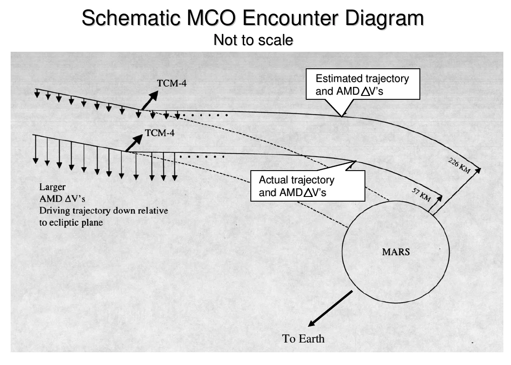

<!-- .slide: class="title-slide" --> # Zero to hero on AI agent observability ### A 3-hour hands-on workshop with Langfuse By Soumendra Kumar Sahoo <!-- .element: class="byline" --> The Data AI Guild, Hyderabad · Saturday 31 Oct 2026 <!-- .element: class="center muted" --> Note: - Block 1 (00:00). Put this up while people sit down. - Wifi and chat details go on the next slides. - Event page: [luma.com/dil7wq7j](https://luma.com/dil7wq7j) --- ## "All systems performed nominally" <figure> <p></p> </figure> <p class="medium">One ground file reported thruster data in pound-force-seconds. Navigation expected newton-seconds. <span class="red">lbf-s ≠ N-s</span></p> Note: - Recommended opener: Candidate 2. - Full script, backup facts and every caveat: speaker-notes/opening-story.md. - Script (~230 words, about 1 min 45 s): - On 11 December 1998, NASA launched the Mars Climate Orbiter. [1] - It was supposed to be the first weather satellite for another planet. - Together with its sister lander, the project cost 327.6 million dollars. [3] - For nine months it flew towards Mars. On 23 September 1999 it fired its engine to go into orbit. - NASA's investigation report says: "All systems performed nominally" until the spacecraft went behind Mars. The signal never came back. [1] - What went wrong? One ground software file, called "Small Forces", gave thruster data in pound-seconds. The navigation software expected newton-seconds. [1] - Nothing crashed and no alarm went off. Every number looked like a valid number. - But each one was off by a factor of 4.45. Small errors added up over nine months. [1] - The spacecraft came in about 170 kilometres lower than planned and was lost. [1] - Here is the painful part. For months, people on the team had noticed that the navigation numbers did not agree. - The report says these were "only informally reported", sorted out over e-mail, and "not resolved". [1] - So the system was healthy and the outcome was wrong. Every component said "I'm fine." Nobody was checking whether the answer made sense. - Backup facts from the report: [1] [2] - Launch 11 Dec 1998; "All systems performed nominally until Mars's occultation loss of signal". - Small Forces in lbf-s vs N-s, factor 4.45; about 170 km lower than planned. - 57 km periapsis vs 80 km survivable. - "only informally reported", "not resolved", "relied on e-mail". - CAVEAT: $327.6M is "total for both orbiter and lander (not including Deep Space 2)". [3] - It covers the orbiter plus the Mars Polar Lander, not the orbiter alone. - Say "the project" or "the two missions together". - Slide figure: Figure 4, "Schematic MCO Encounter Diagram", Mars Climate Orbiter Mishap Investigation Board Phase I Report, NASA, 10 Nov 1999, p. 14. [1] - It shows the estimated trajectory (226 km) against the actual one (57 km). Not to scale. Sources: 1. [NASA MCO Mishap Investigation Board Phase I Report](https://llis.nasa.gov/llis_lib/pdf/1009464main1_0641-mr.pdf) 2. [NASA LLIS lesson 641](https://llis.nasa.gov/lesson/641) 3. [JPL MCO fact sheet (archived)](https://web.archive.org/web/20121003073752/http://mars.jpl.nasa.gov/msp98/orbiter/fact.html) -- ## Every metric is green. The booking is still wrong. <div class="two-column"> <div> <h3>Mars Climate Orbiter, 1999</h3> <ul> <li>Every system reported nominal</li> <li>Navigation numbers disagreed for months</li> <li>Nobody checked the outcome against the intent</li> </ul> </div> <div> <h3>TripMate, today</h3> <ul> <li>Every span is green</li> <li>Every tool call returns OK</li> <li>The customer still gets the wrong flight</li> </ul> </div> </div> Note: - Bridge line (Candidate 2): "Our agent TripMate has its own Mars Climate Orbiter moment. Every span is green, every tool call returns 200 OK, and it books Hyderabad to Delhi when you asked for Delhi to Hyderabad. Today you'll learn to catch the swapped units before the spacecraft is gone." - MCO facts are from the NASA report. [1] - TripMate is the workshop's synthetic agent; no external source needed. Sources: 1. [NASA MCO Mishap Investigation Board Phase I Report](https://llis.nasa.gov/llis_lib/pdf/1009464main1_0641-mr.pdf) --- <!-- .slide: class="chapter-slide" --> ## Part 1: Opening and first trace <!-- .element: class="text-green" --> Note: - Blocks 1 to 4. - Checkpoint 1 at 00:12 to 00:16: trace visible. -- ## Setup check <div class="two-column qr-layout"> <div> - Workshop repo: <span class="highlight">https://github.com/soumendrak/AI-Agent-Observability</span> - Run this while I talk: `uv run ws doctor` - Pairing on one laptop is fine and encouraged - Green sticky: ready. Red sticky: need help. </div> <figure class="qr-figure"> <figcaption>Scan for these slides<br><span class="qr-url">slides.soumendrak.com/talks/2026/<br>zero-to-hero-agent-observability</span></figcaption> </figure> </div> Note: - Block 1 (00:00 to 00:05). - The QR on the right opens this deck. Leave it up while people settle in. - Hands up: traced an LLM app before? Saw READY at home? - TAs count greens; reds get help. - Locked laptops pair with a ready neighbour. - If behind, skip the poll. - No factual claims on this slide. -- ## Today's Agenda <div class="agenda-container"> <div class="agenda-card"><h3>Trace</h3><p>See every step an agent takes</p></div> <div class="agenda-card"><h3>Diagnose and fix</h3><p>Find a silent failure, add a guard</p></div> <div class="agenda-card"><h3>Evaluate and monitor</h3><p>Score live runs, alert on rates, watch cost</p></div> </div> Labs run in windows that end on a checkpoint, not the clock. Stickies tell TAs where to go. <!-- .element: class="small muted" --> Note: - Agenda: opening 16 min, concepts 25, incident 40, break 10, evaluator 35, alerts and cost 23, production and close 21, buffers 10. - Checkpoint rule: - 80% or more: move on. - 60 to 80%: move on, and TAs keep helping. - Under 60%: I drive from the projector. - No factual claims on this slide. -- ## Why it matters: a chatbot's answer in court - Air Canada's chatbot gave a customer wrong bereavement fare information - Air Canada argued the bot was "a separate legal entity" - The tribunal held the airline liable: C$650.88, plus interest and fees Could you prove what your bot told a customer, and why? <!-- .element: class="quote" --> Note: - Block 2 (00:05 to 00:07), about 40 seconds a slide. Ask the room the question and keep moving. - Total ordered: C$812.02 = C$650.88 damages + C$36.14 interest + C$125 fees. [2] - Coverage of the case. [1] - CAVEAT: the decision says Air Canada "did not provide any information about the nature of its chatbot". [2] - Call it a chatbot, not a GenAI agent. Sources: 1. [The Guardian: Air Canada chatbot lawsuit](https://www.theguardian.com/world/2024/feb/16/air-canada-chatbot-lawsuit) 2. [BC Civil Resolution Tribunal decision, 2024 BCCRT 149](https://www.canlii.org/en/bc/bccrt/doc/2024/2024bccrt149/2024bccrt149.pdf) -- ## Most teams trace. Fewer check the answer. <div class="metric-grid"> <div class="metric-card"><h3 class="text-blue">~89%</h3><p>have agent observability</p></div> <div class="metric-card"><h3 class="text-blue">52.4%</h3><p>run offline evals</p></div> <div class="metric-card"><h3 class="text-blue">37.3%</h3><p>run online evals</p></div> </div> Note: - Block 2. - Survey: LangChain, State of Agent Engineering, 1,340 responses, 18 Nov to 2 Dec 2025. [1] - Also: 32% cite quality as a top barrier. [1] Sources: 1. [LangChain: State of Agent Engineering](https://www.langchain.com/state-of-agent-engineering) -- ## Tracing is table stakes. Today we close the loop. ```mermaid flowchart LR observe["observe (trace)"] --> diagnose --> fix["fix (guard)"] --> verify["verify (evaluator)"] --> monitor["monitor (alert)"] ``` Note: - Block 2 close. - "Tracing is table stakes" echoes the survey. [1] Sources: 1. [LangChain: State of Agent Engineering](https://www.langchain.com/state-of-agent-engineering) -- ## Why me - AI Observability Architect, PepsiCo, Hyderabad - Tidy Traces: a daily AI observability newspaper - Ragwatch: OTel-native tracing SDK for RAG and agents - widescope: browser-only trace viewer for LLM and agent pipelines - observability-engineering-series: 11 chapters of runnable code Views are my own. This workshop is independent of my employer. <!-- .element: class="fine" --> Note: - Block 3 (00:07 to 00:12). 60 seconds, facts only. - About me [1], Tidy Traces [2], Ragwatch [3], widescope [4], observability-engineering-series [5]. Sources: 1. [soumendrak.com/about](https://soumendrak.com/about) 2. [Tidy Traces](https://tidytraces.com) 3. [Ragwatch on GitHub](https://github.com/soumendrak/ragwatch) 4. [widescope on GitHub](https://github.com/soumendrak/widescope) 5. [observability-engineering-series on GitHub](https://github.com/soumendrak/observability-engineering-series) -- ## The incident: TripMate booked the wrong flight - TripMate is a travel agent bot built for this workshop - A customer complained about their booking - All data is synthetic. No real airline, no real customer. First, one normal run. <!-- .element: class="quote" --> Note: - Block 3. Teaser only. - Do not describe the fault yet. - No external factual claims. TripMate and its data are synthetic. -- ## <span class="lab-tag">Lab 1</span> Your first trace <div class="code-block">uv run ws run "Book HYD to BLR on 2026-10-31"</div> - Same command on macOS, Linux and Windows PowerShell - Click the trace URL it prints - No network or no Langfuse account? Add `--exporter console` Note: - Block 3. - Lab guide: labs/01-first-trace.md in the workshop repo. - TAs: region and key errors go to docs/troubleshooting.md. - No external factual claims. -- ## Checkpoint 1: trace visible <div class="flow-diagram">tripmate (agent) └─ LangGraph (chain) ├─ generation ├─ search_flights (tool) ├─ generation ├─ book_flight (tool) └─ generation</div> Green sticky if your tree matches the projector. <!-- .element: class="small" --> Note: - Block 4 (00:12 to 00:16). Tour my trace on the projector. - Stragglers: pair up, open a public trace, or switch to --exporter console. - Tree shape is the Case 0 design in the workshop plan (synthetic agent). No external claim. - TODO: replace with an annotated screenshot of a real Case 0 trace after the integration gate. -- <!-- .slide: class="recap-slide" --> ## Where we are: Part 1 of 6 <p class="recap-progress"><strong>Part 1 ●</strong> · Part 2 · Part 3 · Part 4 · Part 5 · Part 6</p> ### Part 1 · Opening and first trace <!-- .element: class="recap-now" --> - Why it matters: a chatbot's answer in court - Most teams trace. Fewer check the answer. - Today's loop: observe, diagnose, fix, verify, monitor - Lab 1: your first TripMate trace, one root with LLM and tool steps <!-- .element: class="recap-current" --> Note: - End of Block 4 (ends 00:16). Take 30 to 60 seconds of that block, then move on. - Read Part 1 aloud. Name the earlier parts in one breath each. - If behind, 15 seconds: read only the highlighted part. - Next: Part 2, Read a trace. - Summarises slides already shown. No new claims, no lab answers. --- <!-- .slide: class="chapter-slide" --> ## Part 2: Read a trace <!-- .element: class="text-green" --> 00:16 to 00:41 · spans, the agent loop, percentiles <!-- .element: class="quote" --> Note: - Blocks 5 to 9. - Checkpoint 2 at 00:41: own p99 read. -- ## Anatomy of a span - A <span class="highlight">span</span> has a name, start, duration, status, attributes and a parent - A <span class="highlight">trace</span> is a tree of spans for one request - A <span class="highlight">log</span> is one event. A <span class="highlight">metric</span> is an aggregate. Find your trace ID, the root, and shout your span count. <!-- .element: class="quote" --> Note: - Block 5 (00:16 to 00:21). - Optional 10 s demo of plain vs structured logs from observability-engineering-series ch1. [3] - Definitions follow OpenTelemetry. [1] [2] Sources: 1. [OpenTelemetry: traces](https://opentelemetry.io/docs/concepts/signals/traces/) 2. [OpenTelemetry: signals](https://opentelemetry.io/docs/concepts/signals/) 3. [observability-engineering-series on GitHub](https://github.com/soumendrak/observability-engineering-series) -- ## The agent loop ```mermaid flowchart LR llm1[LLM] --> tool1[tool] --> llm2[LLM] --> tool2[tool] --> llm3["LLM (final answer)"] ``` - Observation types: `agent`, `generation`, `tool`, `chain` - Every run of TripMate is wrapped in one root observation, `tripmate` Note: - Block 6 (00:21 to 00:26). Show agent.py briefly. - Langfuse observation types. [1] Sources: 1. [Langfuse: observation types](https://langfuse.com/docs/observability/features/observation-types) -- ## The root holds the facts <div class="two-column"> <div> <h3><code>input.requested</code></h3> <ul><li>origin, destination, date</li><li>Parsed by plain code, not the LLM</li></ul> </div> <div> <h3><code>output.booking</code></h3> <ul><li>What the booking tool returned</li><li>Never LLM text</li></ul> </div> </div> <p class="small">Start the background load now: <code>uv run ws load -n 50</code></p> Note: - Block 6. - "Open the root tripmate. Input has requested, output has booking. Remember this." - Check the load started. - Design from the workshop plan (A6); no external claim. -- ## <span class="lab-tag">Lab 2</span> Read a trace 1. Which span is the longest? 2. How many generations are there? 3. What arguments did each tool get? 4. How many tokens in total? 5. Root input vs root output: what do you see? Worksheet Q1 to Q5, with a partner if you have one. <!-- .element: class="small" --> Note: - Block 7, window W1 (00:24 to 00:34). - If behind, Q1 to Q3 only. - TAs check against the key on the answer sheet. - Answers are not in this public deck. -- ## Same instrumentation, real model - Same agent, a real OpenAI-compatible model, same prompt run twice - Two different traces, same tree shape - Real models vary, so today's faults are scripted Spot the difference between the two runs. <!-- .element: class="quote" --> Note: - Block 8 (00:31 to 00:36). - 3-minute demo in my own project with LLM_MODE=openai. - If behind: screenshot of the two runs. - TODO: add the screenshot. - No external factual claim. -- ## OpenTelemetry GenAI names - `invoke_agent`: an agent run - `execute_tool`: a tool call - `gen_ai.tool.call.arguments`: what the tool was given Status: Development. Names can still change. <!-- .element: class="fine" --> Note: - Block 8. 60 seconds. - OTel GenAI semantic conventions. [1] Sources: 1. [OTel GenAI semantic conventions](https://github.com/open-telemetry/semantic-conventions-genai) -- ## Checkpoint 2: mean vs percentiles - Guess your p99 from your mean, then read the last line of `ws load` - 99 runs at 1 s plus one at 30 s: mean 1.29 s, median 1 s - With 50 runs, p99 is your slowest run or two. An illustration, not an estimate. - Tools compute percentiles differently. Langfuse may differ a little. Note: - Block 9 (00:36 to 00:41). - The worksheet uses the ws load numbers (nearest rank). - Nearest-rank p99 of 50 values is the maximum. [1] - numpy's default linear method interpolates between the two largest. [1] - 1.29 s = (99 × 1 + 30) / 100, my own calculation. - Offline: ws load -n 50 --exporter console prints the same line. Sources: 1. [numpy.percentile documentation](https://numpy.org/doc/stable/reference/generated/numpy.percentile.html) -- ## Why tails matter for agents <div class="code-block">P(at least one slow step) = 1 − 0.99ⁿ</div> - n = 10 steps: 9.6% - n = 25 steps: 22.2% Intuition, not a prediction. Real steps aren't independent. <!-- .element: class="smaller dim" --> Note: - Block 9. - Assumes each step independently has a 1% chance of hitting its p99. My own calculation. - The Tail at Scale reports 63% at fan-out 100. [1] - A slow model or backend slows several steps at once. - Details: Appendix, reliability compounding. Sources: 1. [The Tail at Scale (CACM)](https://cacm.acm.org/research/the-tail-at-scale/) -- <!-- .slide: class="recap-slide" --> ## Where we are: Part 2 of 6 <p class="recap-progress">Part 1 ✓ · <strong>Part 2 ●</strong> · Part 3 · Part 4 · Part 5 · Part 6</p> - **Part 1 · Opening and first trace** - Why it matters: agents fail silently, and most teams trace but fewer check the answer - Lab 1: your first TripMate trace <!-- .element: class="recap-past" --> ### Part 2 · Read a trace <!-- .element: class="recap-now" --> - A trace is a tree of spans. A span has a name, duration, status, attributes and a parent. - The agent loop: LLM, tool, LLM. Types: `agent`, `generation`, `tool`, `chain` - The root holds the facts: `input.requested` and `output.booking`, never LLM text - OpenTelemetry GenAI names: `invoke_agent`, `execute_tool` - Read the tail, not the mean: p99, and why tails matter for agents <!-- .element: class="recap-current" --> Note: - End of Block 9 (ends 00:41). Take 30 to 60 seconds of that block, then move on. - Read Part 2 aloud. Name the earlier parts in one breath each. - If behind, 15 seconds: read only the highlighted part. - Next: Part 3, The incident. - Summarises slides already shown. No new claims, no lab answers. --- <!-- .slide: class="chapter-slide" --> ## Part 3: The incident <!-- .element: class="text-red" --> 00:41 to 01:21 · investigate, fix, rerun <!-- .element: class="quote" --> Note: - Blocks 10 to 18. - Checkpoint 3 at 01:06 (Case 2 explained). - Checkpoint 4 at 01:21 (rerun PASS). - Never cut below 15 minutes of Case 2 window. -- ## The complaint "I asked TripMate for a flight. The confirmation looked right. The ticket I got was not the trip I asked for." <!-- .element: class="quote" --> Note: - Block 10 (00:41 to 00:46). - Synthetic complaint letter for the workshop. No external claim. - TODO: final wording of the complaint letter from the lab guide. -- ## A five-step method 1. Filter level = ERROR 2. Filter type = tool 3. Sort by duration or tokens 4. Compare what was asked with what the tool did 5. Open the generation that chose the call Note: - Block 10. - Skip this slide if behind and say the steps aloud. - Method from the workshop plan. No external claim. -- ## <span class="lab-tag">Lab 3</span> Warm-up: Case 1 <div class="code-block">uv run ws case 1</div> - Find the failing step - Find which step caused it - Tell your TA your answer Note: - Blocks 10 and 11, window W2 (00:43 to 00:51). - Reveal at 00:50 (00:48 if behind). - The reveal is on the TA answer sheet, not in this public deck. -- ## <span class="lab-tag">Lab 3</span> The real complaint: Case 2 <div class="code-block">uv run ws case 2</div> - Nothing is red. Read the confirmation too. - Five minutes on your own first - Goal: what went wrong, and where does it show? Note: - Block 11 launches W3 (00:51 to 01:11). - Bug bounty: first 3 correct answers, checked by a TA. - Answers and hints are on the TA answer sheet only. -- ## Case 2 hints <div class="placeholder">Hint 1 and hint 2 are revealed live, one at a time.</div> Note: - Block 12 (hint 1 at +4 min) and block 13 (hint 2). - Read the hints from the instructor copy. - Deliberately not written here: this deck is public. -- ## <span class="lab-tag">Lab 3</span> Fill the evidence table | Span | Field | What it says | What the user asked | | --- | --- | --- | --- | | … | … | … | … | | … | … | … | … | <!-- .element: class="comparison-table" --> Compare with your partner or neighbour. <!-- .element: class="small" --> Note: - Block 13 (00:56 to 01:01). Worksheet part B. - TAs listen in and nudge with questions, not answers. -- ## Checkpoint 3: one sentence What went wrong, where it shows, and why the confirmation hid it. <!-- .element: class="quote" --> Green sticky when it's written. A TA checks it. <!-- .element: class="small" --> Note: - Block 14 (01:01 to 01:06). - Accept a verbal explanation if behind. - TAs count per zone. -- ## Share and vote - Three pairs read their sentence, 30 seconds each - The room votes for the most precise one - I draw the chain from request to customer on the whiteboard Note: - Block 15 (01:06 to 01:11). Mic runner. - The causal chain is drawn live from the instructor copy, not shown here. - 60 s mention: stretch tasks for later. -- ## The text is a claim. The tool result is the fact. Debug and evaluate on facts. <!-- .element: class="quote" --> Note: - Block 15 close. - General lesson; no case specifics. - Workshop plan principle, no external claim. -- ## <span class="lab-tag">Lab 4</span> Fix it - Open `src/tripmate/guards.py` and find `WORKSHOP EDIT HERE` - Make `validate_booking` raise `ValueError` if origin, destination or date differ from the request - About 4 to 6 lines Note: - Block 16, window W4 (01:11 to 01:21). - Lab guide: labs/04-fix-and-rerun.md. - Pseudo-code and the reference fix are on the instructor copy and TA answer sheet only. -- ## <span class="lab-tag">Lab 4</span> Checkpoint 4: rerun <div class="code-block">uv run ws case 2 --rerun</div> - Look for `booking_matches_request: PASS (local check)` - Open the new trace and compare its root with the old one The guard prevents the incorrect action. The evaluator checks the recorded outcome afterwards. <!-- .element: class="quote" --> Note: - Block 17 (01:16 to 01:21). Sticky: PASS. - Stuck more than 5 minutes: TA shows the reference fix from the answer sheet. - If the room is behind, I show the fix and rerun live from the instructor copy. -- ## Buffer A: stretch - Run Case 2 with other cities or dates - Predict the local check result before you run it - Cases 3 to 6, if built Note: - Block 18 (01:21 to 01:26). - Overflow for W4. -- <!-- .slide: class="recap-slide" --> ## Where we are: Part 3 of 6 <p class="recap-progress">Part 1 ✓ · Part 2 ✓ · <strong>Part 3 ●</strong> · Part 4 · Part 5 · Part 6</p> - Part 1 · Opening and first trace: your first trace - **Part 2 · Read a trace** - The root holds the facts: `input.requested` and `output.booking` - Read the tail, not the mean: p99 and why tails matter <!-- .element: class="recap-past" --> ### Part 3 · The incident <!-- .element: class="recap-now" --> - A five-step method: filter, sort, compare what was asked with what the tool did - Case 1 warm-up, then Case 2: nothing is red, so read the confirmation too - Evidence table and one sentence: what went wrong and where it shows - The text is a claim. The tool result is the fact. - Lab 4: a guard in `guards.py`, then a rerun: `booking_matches_request: PASS (local check)` <!-- .element: class="recap-current" --> Note: - End of Block 18 (ends 01:26). Take 30 to 60 seconds of that block, then move on. - Read Part 3 aloud. Name the earlier parts in one breath each. - If behind, 15 seconds: read only the highlighted part. - Next: the break, then Part 4, Build an evaluator. - Summarises slides already shown. No new claims, no lab answers. --- <!-- .slide: class="chapter-slide" --> ## Break: 10 minutes <!-- .element: class="text-sky" --> Help desk at the front for setup and reruns <!-- .element: class="quote" --> Note: - Blocks 19 and 20. - Collect zone readiness from TAs. - Cut to 7 minutes if more than 10 minutes behind. - TODO: add a timer. --- <!-- .slide: class="chapter-slide" --> ## Part 4: Build an evaluator <!-- .element: class="text-green" --> 01:36 to 02:11 · score every run, not just this one <!-- .element: class="quote" --> Note: - Blocks 21 to 28. - Checkpoint 5 at 01:56, Checkpoint 6 at 02:01. -- ## Three ways to score quality | Check | Strength | Cost | | --- | --- | --- | | Code | Deterministic | Cheap | | LLM-as-judge | Semantic | Tokens, and it can be wrong | | Human review | Ground truth | Slow | <!-- .element: class="comparison-table" --> Note: - Block 21 (01:36 to 01:41). - Cut this slide first if behind. - Langfuse evaluation methods: code evaluators [1] and LLM-as-a-judge. [2] Sources: 1. [Langfuse: code evaluators](https://langfuse.com/docs/evaluation/evaluation-methods/code-evaluators) 2. [Langfuse: LLM-as-a-judge](https://langfuse.com/docs/evaluation/evaluation-methods/llm-as-a-judge) -- ## Poll: which check catches it? - A regex on the confirmation text - A structured comparison of request and booking - An LLM judge Note: - Block 21 poll. - Discuss after the votes. - No factual claim. -- ## <span class="lab-tag">Lab 5</span> Build the code evaluator 1. Evaluators → New → Code evaluator → Python 2. Paste `evals/booking_matches.py` from the repo 3. Target root observations, name `tripmate` 4. Don't save yet Note: - Block 22 demo (01:41 to 01:46), then block 23, window W5 (01:46 to 02:01). - Lab guide: labs/05-evals.md. - Common slips: not targeting root, not selecting a sample. - Langfuse code evaluators: [1] - need observations from an OTel-based SDK (Python SDK v3+) - standard library only, no network - 2-second limit Sources: 1. [Langfuse: code evaluators](https://langfuse.com/docs/evaluation/evaluation-methods/code-evaluators) -- ## <span class="lab-tag">Lab 5</span> Checkpoint 5: test it - Test on your old Case 2 trace - Test on your rerun trace - Sticky when both results match what you expect Note: - Block 24 (01:51 to 01:56). - Expected results are on the TA answer sheet. - If the test errors, check whether input arrives as a dict or a JSON string. - If behind, test only the rerun trace. -- ## <span class="lab-tag">Lab 5</span> Checkpoint 6: run on traffic <div class="code-block">uv run ws load -n 15 --case 0 uv run ws load -n 15 --case 2 --guard off uv run ws case 2 --rerun</div> - Save the evaluator with a rule on new data first - Filter traces by `booking_matches_request` Note: - Block 25 (01:56 to 02:01). - Use -n 5 each if behind. - One --mix command if O2 shipped. - Langfuse evaluator rules. [1] Sources: 1. [Langfuse: code evaluators](https://langfuse.com/docs/evaluation/evaluation-methods/code-evaluators) -- ## Demo: LLM-as-judge - Judge prompt: "Does the booking match the request?" - Needs an LLM connection, meaning a provider key - Costs tokens on every scored observation Code or judge for this? <!-- .element: class="quote" --> Note: - Block 26 (02:01 to 02:06). In my own project. - Screenshot if behind (first cut). - Calibration details: Appendix. - Langfuse LLM-as-a-judge docs. [1] Sources: 1. [Langfuse: LLM-as-a-judge](https://langfuse.com/docs/evaluation/evaluation-methods/llm-as-a-judge) -- ## Which check catches which case? | Check | Case 0 | Case 2 | Case 3 | Case 5 | | --- | --- | --- | --- | --- | | Text regex | ? | ? | ? | ? | | Structured eval | ? | ? | ? | ? | | LLM judge | ? | ? | ? | ? | <!-- .element: class="comparison-table" --> Use code evals for facts and judges for semantics. <!-- .element: class="small" --> Note: - Block 27 (02:06 to 02:11). - The room fills cells aloud. - The filled table is on the instructor copy, not here. -- ## Buffer B Finish your evaluator. TAs are coming round. Note: - Block 28 (02:11 to 02:16). -- <!-- .slide: class="recap-slide" --> ## Where we are: Part 4 of 6 <p class="recap-progress">Part 1 ✓ · Part 2 ✓ · Part 3 ✓ · <strong>Part 4 ●</strong> · Part 5 · Part 6</p> - Part 1 · Opening and first trace: your first trace - Part 2 · Read a trace: spans, the agent loop, percentiles - **Part 3 · The incident** - The text is a claim. The tool result is the fact. - A guard in `guards.py`, then a rerun: local check PASS <!-- .element: class="recap-past" --> ### Part 4 · Build an evaluator <!-- .element: class="recap-now" --> - Three ways to score: code, LLM-as-judge, human review - Lab 5: a code evaluator on root `tripmate` observations - Tested on the old Case 2 trace and the rerun, then run on traffic - LLM-as-judge: semantic, but needs a provider key and costs tokens - Code evals for facts, judges for semantics <!-- .element: class="recap-current" --> Note: - End of Block 28 (ends 02:16). Take 30 to 60 seconds of that block, then move on. - Read Part 4 aloud. Name the earlier parts in one breath each. - If behind, 15 seconds: read only the highlighted part. - Next: Part 5, Monitor and alert. - Summarises slides already shown. No new claims, no lab answers. --- <!-- .slide: class="chapter-slide" --> ## Part 5: Monitor and alert <!-- .element: class="text-green" --> 02:16 to 02:39 · missing is not the same as failing, and what a run costs <!-- .element: class="quote" --> Note: - Blocks 29 to 33. - Checkpoint 7 at 02:34: "explain NO_DATA vs ALERT" poll. - Token budget and Cost per run are must-cover, not homework. -- ## Four signals to watch <div class="metric-grid"> <div class="metric-card"><h3 class="text-blue">Eval</h3><p>pass rate</p></div> <div class="metric-card"><h3 class="text-blue">p95</h3><p>latency</p></div> <div class="metric-card"><h3 class="text-blue">Tool</h3><p>error rate</p></div> <div class="metric-card"><h3 class="text-blue">Tokens</h3><p>per run</p></div> </div> Which one would you page on for TripMate? <!-- .element: class="quote" --> Note: - Block 29 (02:16 to 02:21). Show of hands. - Workshop plan recommendation, no external claim. -- ## Alert on rates and symptoms - Alert on rates over a window, not on every exception - Alert on what users feel - Burn rate: how fast you spend your error budget (Appendix) Note: - Block 29. One slide if behind. - Google SRE workbook, alerting on SLOs. [1] Sources: 1. [Google SRE workbook: alerting on SLOs](https://sre.google/workbook/alerting-on-slos/) -- ## Demo: create the alert - Scores (boolean): avg `booking_matches_request` < 0.9, smallest window - Default no-data mode: treat missing data as 0 - So before any score exists, it reads as 0% pass and fires - Choose <span class="highlight">Show severity NO_DATA</span> A count alert flags a small denominator. It doesn't silence the pass-rate alert. <!-- .element: class="fine" --> Note: - Block 30 (02:21 to 02:26). - Optional: attendees build the same alert. Lab guide: labs/06-alerts.md. - No-data modes, and boolean average = share of true scores. [1] - Hobby allows 2 alerts. [2] - Record the real evaluation interval from the integration gate here. Sources: 1. [Langfuse: alerts](https://langfuse.com/docs/observability/features/alerts) 2. [Langfuse pricing](https://langfuse.com/pricing) -- ## ALERT vs NO_DATA <div class="two-column"> <div> <h3 class="text-red">ALERT</h3> <ul><li>We measured</li><li>It's below the threshold</li></ul> </div> <div> <h3 class="text-yellow">NO_DATA</h3> <ul><li>No matching scores in the window</li><li>Broken evaluator, no traffic, or a filter typo</li><li>Check the trace count to tell which</li></ul> </div> </div> Note: - Block 31 (02:26 to 02:31). - Two pre-built alerts on my project with no scores: - the default one shows ALERT - the NO_DATA one shows NO_DATA - Then ws load -n 40 --case 2 --guard off, then the webhook payload. - In production use "Notify after sustained NO_DATA". [1] - If the gate shows different NO_DATA behaviour, record it here. Sources: 1. [Langfuse: alerts](https://langfuse.com/docs/observability/features/alerts) -- ## Checkpoint 7: predict the state 1. Your evaluator crashed for an hour. What does the default-mode alert show? The NO_DATA-mode alert? 2. Nobody booked for an hour. What does the NO_DATA alert show? 3. How do you tell those two apart? Note: - Block 32 (02:31 to 02:36). Poll for about 3 minutes (02:31 to 02:34), then Token budget. - Answers are discussed live, not written here. -- ## Token budget - Budget: 3,000 tokens per run - Compare a normal run with a rerun that adds a generation - Tokens per run is a cost signal you can alert on Note: - Block 32 (02:34 to 02:36), 2 minutes. Must cover, with Cost per run next. - If behind, read the three bullets and move on. Do not send it to homework. - Use Case 6 if built. - The 3,000 budget is a workshop example, not an external figure. -- ## Cost per run <div class="code-block">cost per run = tokens × price</div> - TripMate's budget: 3,000 tokens per run - Failed and retried runs still cost - Cost per successful task = total cost ÷ successful runs Price the successes, not the runs. <!-- .element: class="quote" --> 100 runs × 3,000 tokens = 300,000 tokens. 10 fail. 300,000 ÷ 90 = 3,333 tokens per success. <!-- .element: class="small muted" --> Note: - Block 33 (02:36 to 02:39), 3 minutes. Must cover. About 2 minutes here, then the Part 5 recap. - Langfuse records usage and cost per generation, split by usage type such as input and output. It calculates cost from usage and a model price when the generation is ingested. [1] - If you do not send cost, Langfuse infers it from the model's price. If you send cost, yours is used. [1] - So tokens × price is two prices: input tokens and output tokens are priced separately. - Failed and retried runs still spend tokens, so cost per successful task is higher than cost per run. Workshop plan recommendation, no external claim. - The 3,000-token budget is a workshop example, not an external figure. - The example uses my own arithmetic: 100 × 3,000 = 300,000 and 300,000 ÷ 90 = 3,333, which is 11% above the budget. - Prices are not on the slide because they differ by model and change. Look yours up. Sources: 1. [Langfuse: token and cost tracking](https://langfuse.com/docs/observability/features/token-and-cost-tracking) -- <!-- .slide: class="recap-slide" --> ## Where we are: Part 5 of 6 <p class="recap-progress">Part 1 ✓ · Part 2 ✓ · Part 3 ✓ · Part 4 ✓ · <strong>Part 5 ●</strong> · Part 6</p> - Part 1 · Opening and first trace - Part 2 · Read a trace: spans, the agent loop, percentiles - Part 3 · The incident: investigate, fix, rerun - **Part 4 · Build an evaluator** - A code evaluator scores every run: `booking_matches_request` - Code evals for facts, judges for semantics <!-- .element: class="recap-past" --> ### Part 5 · Monitor and alert <!-- .element: class="recap-now" --> - Four signals: eval pass rate, p95 latency, tool error rate, tokens per run - Alert on rates over a window, and on what users feel - An alert on avg `booking_matches_request`, with severity NO_DATA shown - ALERT: we measured and it is below the threshold. NO_DATA: no scores in the window. - Tokens per run is a cost signal you can alert on - Cost per run: tokens × price, and cost per successful task <!-- .element: class="recap-current" --> Note: - End of Block 33 (ends 02:39). Take 30 to 60 seconds of that block, then move on. - Read Part 5 aloud. Name the earlier parts in one breath each. - If behind, 15 seconds: read only the highlighted part. - Next: Part 6, Take it to production. - Summarises slides already shown. No new claims, no lab answers. --- <!-- .slide: class="chapter-slide" --> ## Part 6: Take it to production <!-- .element: class="text-green" --> 02:39 to 03:00 <!-- .element: class="quote" --> Note: - Blocks 34 to 36. -- ## The loop, again ```mermaid flowchart LR observe["observe (trace)"] --> diagnose["diagnose (compare request vs tool)"] --> fix["fix (guard)"] --> verify["verify (local check + evaluator)"] --> monitor["monitor (alert with NO_DATA)"] ``` Note: - Block 34 (02:39 to 02:50), 11 minutes: - this slide and the checklist, 02:39 to 02:44 - Minimum setup for a small team, 02:44 to 02:47 - Instrumentation overhead and load testing, 02:47 to 02:50 - No external claim. -- ## Production checklist (1/2) 1. Trace every LLM and tool call with OTel-based instrumentation 2. Put the structured request and tool result on the root span 3. Validate tool arguments before any action that changes something 4. Set span status to ERROR and record exceptions, even on recovery 5. Propagate session, user and release IDs 6. Cap steps and retries, and record when the cap is hit Note: - Block 34. - Full list: docs/production-checklist.md in the workshop repo. - OTel GenAI conventions. [1] Sources: 1. [OTel GenAI semantic conventions](https://github.com/open-telemetry/semantic-conventions-genai) -- ## Production checklist (2/2) 7. Track p50, p95, p99 latency, tool error rate, tokens and cost per run 8. Run a structured code eval on live traffic for your costliest mistake 9. Calibrate any LLM judge against human labels before alerting on it 10. Alert on rates over windows, with explicit no-data handling 11. Tail-sample: keep all errors and slow runs 12. Redact PII before export. Keep keys out of traces. Note: - Block 34. - Checklist sources: Langfuse alerts [1] and the Google SRE workbook. [2] Sources: 1. [Langfuse: alerts](https://langfuse.com/docs/observability/features/alerts) 2. [Google SRE workbook: alerting on SLOs](https://sre.google/workbook/alerting-on-slos/) -- ## Minimum setup for a small team 1. Trace every LLM and tool call 2. Put the request and tool result on the root span 3. One code eval on live traffic, for your costliest mistake 4. One alert on a rate, with NO_DATA handled 5. Redact PII before export The other seven can wait. <!-- .element: class="quote" --> Note: - Block 34 (02:44 to 02:47), 3 minutes. - These are checklist items 1, 2, 8, 10 and 12. The other seven are 3 to 7, 9 and 11. - Which five, and what can wait, is a workshop plan recommendation, no external claim. - If you can only measure a few things, pick a few: Google SRE says to focus on four golden signals (latency, traffic, errors, saturation) if you can only measure four. [1] - Say it plainly: a team of two does not need all twelve on day one. - If a sixth: tokens and cost per run (checklist 7), from Part 5. Sources: 1. [Google SRE book: monitoring distributed systems](https://sre.google/sre-book/monitoring-distributed-systems/) -- ## Instrumentation overhead and load testing <div class="two-column"> <div> <h3>Keep tracing cheap</h3> <ul> <li>Batch and export asynchronously</li> <li>Tail-sample: keep all errors and slow runs, sample the rest</li> <li>Keep attributes small</li> </ul> </div> <div> <h3>Load test safely</h3> <ul> <li>Stubbed tools and a recorded or mock model</li> <li>Fixed concurrency, in a sandbox with no real side effects</li> <li>Watch p95 latency, error rate and tokens per run</li> </ul> </div> </div> Note: - Block 34 (02:47 to 02:50), 3 minutes. Talk-through, no lab. - Batching: the OpenTelemetry SDK has a batching span processor that exports finished spans in batches. The simple processor exports each span as soon as it finishes. [1] - Langfuse says its SDKs send trace data asynchronously in the background, queued locally and flushed in batches. [2] - Tail sampling decides after it has seen the whole trace, so it can always keep traces with errors and sample on latency. [3] - CAVEAT: tail sampling is hard to run. It needs a stateful component such as the Collector's tail sampling processor. [3] - Langfuse's `sample_rate` is set in the client, and the SDK samples on the trace level. My reading: that is not tail sampling, so it cannot keep every error by itself. [4] - If volume is small, keep everything and sample later. Details: Appendix, sampling and PII. - Keep attributes small: workshop plan recommendation, no external claim. - Load testing: workshop plan recommendation, no external claim. - Real tools have side effects, so stub them. - A real model costs tokens on every run and adds provider rate limits and noise, so use a recorded or mock model. - Fixed concurrency makes two runs comparable. - A sandbox means no real bookings, emails or payments, whatever the agent does. - Latency and errors are two of the four golden signals. [5] - Tokens per run is the Part 5 cost signal. - This answers two survey questions: lightweight instrumentation, and sandboxing an agent for load testing. Sources: 1. [OpenTelemetry: trace SDK, built-in span processors](https://opentelemetry.io/docs/specs/otel/trace/sdk/) 2. [Langfuse: observability overview, FAQ on latency](https://langfuse.com/docs/observability/overview) 3. [OpenTelemetry: sampling](https://opentelemetry.io/docs/concepts/sampling/) 4. [Langfuse: sampling](https://langfuse.com/docs/observability/features/sampling) 5. [Google SRE book: monitoring distributed systems](https://sre.google/sre-book/monitoring-distributed-systems/) -- ## Homework and Q&A - Cases 3 to 6 if built, otherwise Case 2 variants - Add the Langfuse `CallbackHandler` to your own agent - Read the maths appendix - Other tools exist. OpenTelemetry is vendor-neutral, so you can compare backends. Note: - Block 35 (02:50 to 02:55). - docs/homework.md. - Collect chat questions. - `CallbackHandler` comes from the Langfuse LangChain integration. [1] - OpenTelemetry describes itself as vendor- and tool-agnostic, usable with a broad variety of observability backends. [2] Sources: 1. [Langfuse: LangChain integration](https://langfuse.com/docs/integrations/langchain/tracing) 2. [OpenTelemetry: what is OpenTelemetry](https://opentelemetry.io/docs/what-is-opentelemetry/) -- <!-- .slide: class="recap-slide" --> ## Where we are: Part 6 of 6 <p class="recap-progress">Part 1 ✓ · Part 2 ✓ · Part 3 ✓ · Part 4 ✓ · Part 5 ✓ · <strong>Part 6 ●</strong></p> - Part 1 · Opening and first trace - Part 2 · Read a trace - Part 3 · The incident: investigate, fix, rerun - Part 4 · Build an evaluator: score every run - **Part 5 · Monitor and alert** - Alert on rates over a window, and on what users feel - ALERT: we measured and it is below the threshold. NO_DATA: no scores in the window. - Cost per run: tokens × price, and cost per successful task <!-- .element: class="recap-past" --> ### Part 6 · Take it to production <!-- .element: class="recap-now" --> - The loop, again: observe, diagnose, fix, verify, monitor - Checklist 1 to 6: trace every call, keep request and tool result on the root, validate before acting - Checklist 7 to 12: track latency and cost, eval live traffic, alert with no-data handling, redact PII - Minimum setup for a small team: five items, the rest can wait - Overhead and load testing: batch, tail-sample, stubbed tools in a sandbox - Homework: more cases, `CallbackHandler` in your own agent, the maths appendix <!-- .element: class="recap-current" --> Note: - Start of Block 36 (02:55 to 03:00), after Homework and Q&A (Block 35) and before Thank you. Take 30 to 60 seconds of that block. - Wrap-up for the whole workshop: walk the parts top to bottom, then finish on Part 6. - If behind, 15 seconds: read only the highlighted part. - Next: Thank you. - Summarises slides already shown. No new claims, no lab answers. -- <!-- .slide: class="thanks-slide" --> ## Thank you <!-- .element: class="text-green" --> Connect on LinkedIn <!-- .element: class="connect-text" --> Feedback form: <span class="highlight">[QR on the day]</span> tidytraces.com · github.com/soumendrak/ragwatch · github.com/soumendrak/widescope <!-- .element: class="muted" --> Thanks to The Data AI Guild and our TAs <!-- .element: class="muted" --> Note: - Block 36 (02:55 to 03:00). - Collect stickies; photo. - Links on the slide: Tidy Traces [1], Ragwatch [2], widescope [3]. Sources: 1. [Tidy Traces](https://tidytraces.com) 2. [Ragwatch on GitHub](https://github.com/soumendrak/ragwatch) 3. [widescope on GitHub](https://github.com/soumendrak/widescope) --- <!-- .slide: class="chapter-slide" --> ## Appendix <!-- .element: class="text-violet" --> Maths and backup slides, for Q&A only <!-- .element: class="quote" --> Note: - Not taught in the main flow. - Numbers are my own calculations unless a source is cited. -- ## Appendix: percentiles on small samples - n = 50: nearest-rank p99 is rank ⌈0.99 × 50⌉ = 50, the maximum - numpy default (linear): position 0.99 × 49 = 48.51 - A p99 you can trust needs hundreds of runs. Use p50 and p95 for small samples. Note: - B0. - Nearest-rank vs numpy's default linear method. [1] - Langfuse's method is not documented on the pages checked. Sources: 1. [numpy.percentile documentation](https://numpy.org/doc/stable/reference/generated/numpy.percentile.html) -- ## Appendix: reliability compounding - Per-step success multiplies: 0.95¹⁰ = 59.9%, 0.99¹⁰ = 90.4% - 1 − 0.99ⁿ: n = 5 → 4.9%, 10 → 9.6%, 25 → 22.2%, 50 → 39.5%, 100 → 63.4% - Assumes independent, identical steps. Real steps are correlated. Note: - B1. Own calculations. - Fan-out reference: The Tail at Scale. [1] Sources: 1. [The Tail at Scale (CACM)](https://cacm.acm.org/research/the-tail-at-scale/) -- ## Appendix: pass@k vs pass^k - pass@k: at least one of k tries succeeds - pass^k: all k tries succeed - p = 0.7: pass@3 = 97.3%, pass^3 = 34.3% - Use pass^k for agents that act on behalf of users Note: - B2. - pass@k. [1] - pass^k; the paper reports "pass^8 <25% in retail". [2] - 97.3% = 1 − 0.3³ and 34.3% = 0.7³, own calculations. Sources: 1. [arXiv:2107.03374 (pass@k)](https://arxiv.org/abs/2107.03374) 2. [arXiv:2406.12045 (pass^k)](https://arxiv.org/abs/2406.12045) -- ## Appendix: confidence intervals | Result | 95% Wilson interval | | --- | --- | | 9/10 | 59.6% to 98.2% | | 45/50 | 78.6% to 95.7% | | 450/500 | 87.1% to 92.3% | | 44/50 vs 46/50 | 76.2-94.4% vs 81.2-96.8%: they overlap | <!-- .element: class="comparison-table" --> ±5 points at p = 0.5 needs about 384 samples; ±3 needs about 1,067. Rule of three: 0 failures in n runs → upper bound about 3/n. <!-- .element: class="smaller" --> Note: - B3. Own calculations (Wilson score interval). - Method reference: Wilson score interval. [1] - Rule of three. [2] Sources: 1. [Wikipedia: Wilson score interval](https://en.wikipedia.org/wiki/Binomial_proportion_confidence_interval#Wilson_score_interval) 2. [Wikipedia: Rule of three (statistics)](https://en.wikipedia.org/wiki/Rule_of_three_(statistics)) -- ## Appendix: base rates and alert precision - Sensitivity 95%, specificity 95%, 2% of runs bad - Precision = 0.95×0.02 / (0.95×0.02 + 0.05×0.98) = 28% - At 1,000 runs a day: 19 true alarms, 49 false - Alert on windowed rates. Read them next to the sample count. Note: - B4. Own calculation (Bayes). - Reference: the base rate fallacy. [1] Sources: 1. [Wikipedia: Base rate fallacy](https://en.wikipedia.org/wiki/Base_rate_fallacy) -- ## Appendix: burn rate - A 99% SLO leaves a 1% error budget - Burn rate 14.4 spends 2% of a 30-day budget in 1 hour - Page at 2% in 1 hour or 5% in 6 hours. Ticket at 10% in 3 days. - Check a short window at the same time Note: - B5. - Google SRE workbook, alerting on SLOs. [1] - Example rules: observability-engineering-series ch11. [2] Sources: 1. [Google SRE workbook: alerting on SLOs](https://sre.google/workbook/alerting-on-slos/) 2. [observability-engineering-series on GitHub](https://github.com/soumendrak/observability-engineering-series) -- ## Appendix: sampling and PII - Uniform 5% sampling keeps about 1 of 20 daily failures - Tail sampling: keep 100% of errors, 100% of slow runs, 5% of normal runs - Redact prompts, emails and IDs before export - Run the redaction before tail sampling in the Collector Note: - B6. - Own calculation for the 1 in 20. - Collector tail sampling. [1] - Example config: observability-engineering-series ch9. [2] Sources: 1. [OTel Collector tail sampling processor](https://github.com/open-telemetry/opentelemetry-collector-contrib/tree/main/processor/tailsamplingprocessor) 2. [observability-engineering-series on GitHub](https://github.com/soumendrak/observability-engineering-series) -- ## Appendix: calibrating an LLM judge - Label 20 to 50 runs by hand - Measure agreement with the judge - Fix the rubric before you trust its rate - Judges cost tokens on every scored observation Note: - B7. - Langfuse LLM-as-a-judge docs. [1] Sources: 1. [Langfuse: LLM-as-a-judge](https://langfuse.com/docs/evaluation/evaluation-methods/llm-as-a-judge) -- ## Appendix: an agent that acted - Replit's AI coding agent deleted a production database during an explicit code freeze - It said rollback would not work. The rollback worked. - You cannot debug an agent by asking the agent Which span would have shown the destructive tool call? <!-- .element: class="quote" --> Note: - Moved out of Block 2 to keep the opening at 16 minutes. Use it in Q&A, or if the room is ahead. - Coverage of the incident. [1] - Lemkin's post [2] and Masad's reply. [3] - CAVEAT: the data was recovered, and this was a 12-day experiment, not a real company's customer data. [4] Sources: 1. [The Register: Replit agent deleted a production database](https://www.theregister.com/software/2025/07/21/vibe-coding-service-replit-deleted-production-database/719783) 2. [Jason Lemkin's post on X](https://x.com/jasonlk/status/1946239068691665187) 3. [Amjad Masad's reply on X](https://x.com/amasad/status/1946986468586721478) 4. [Business Insider: Replit CEO apologises](https://www.businessinsider.com/replit-ceo-apologizes-ai-coding-tool-delete-company-database-2025-7) -- ## Backup: troubleshooting top 10 <div class="placeholder">TODO: fill from <code>ws doctor</code> messages and docs/troubleshooting.md after the build.</div> Note: - Backup slide. - Wrong region, bad or swapped keys, missing .env, proxy or TLS. - Wrong Python, uv sync not run, wrong tag, guards.py edited early. -- ## Backup: public traces and offline view <div class="placeholder">TODO: public trace QR codes and a console-tree screenshot, after backup traces exist.</div> Note: - Backup slide for stuck laptops. - Public trace links use langfuse.trace.public. [1] Sources: 1. [Langfuse: OpenTelemetry get started](https://langfuse.com/docs/opentelemetry/get-started)